skimage.util#
General utility functions.
This module contains a number of utility functions to work with images in general.
Map a function in parallel across an array. |
|
Return an image showing the differences between two images. |
|
Crop array ar by crop_width along each dimension. |
|
Return intensity limits, i.e. (min, max) tuple, of the image's dtype. |
|
Convert an image to boolean format. |
|
Convert an image to floating point format. |
|
Convert an image to single-precision (32-bit) floating point format. |
|
Convert an image to double-precision (64-bit) floating point format. |
|
Convert an image to 16-bit signed integer format. |
|
Convert an image to 8-bit unsigned integer format. |
|
Convert an image to 16-bit unsigned integer format. |
|
Invert an image. |
|
Assign unique integer labels to coordinates on an image mask |
|
Map values from input array from input_vals to output_vals. |
|
Create a montage of several single- or multichannel images. |
|
Function to add random noise of various types to a floating-point image. |
|
Find n_points regularly spaced along ar_shape. |
|
Return an image with ~`n_points` regularly-spaced nonzero pixels. |
|
Slice an image along given axes. |
|
Remove repeated rows from a 2D array. |
|
Block view of the input n-dimensional array (using re-striding). |
|
Rolling window view of the input n-dimensional array. |
- skimage.util.apply_parallel(function, array, chunks=None, depth=0, mode=None, extra_arguments=(), extra_keywords=None, *, dtype=None, compute=None, channel_axis=None)[source]#
Map a function in parallel across an array.
Split an array into possibly overlapping chunks of a given depth and boundary type, call the given function in parallel on the chunks, combine the chunks and return the resulting array.
- Parameters:
- functionfunction
Function to be mapped which takes an array as an argument.
- arraynumpy array or dask array
Array which the function will be applied to.
- chunksint, tuple, or tuple of tuples, optional
A single integer is interpreted as the length of one side of a square chunk that should be tiled across the array. One tuple of length
array.ndimrepresents the shape of a chunk, and it is tiled across the array. A list of tuples of lengthndim, where each sub-tuple is a sequence of chunk sizes along the corresponding dimension. If None, the array is broken up into chunks based on the number of available cpus. More information about chunks is in the documentation here. When channel_axis is not None, the tuples can be lengthndim - 1and a single chunk will be used along the channel axis.- depthint or sequence of int, optional
The depth of the added boundary cells. A tuple can be used to specify a different depth per array axis. Defaults to zero. When channel_axis is not None, and a tuple of length
ndim - 1is provided, a depth of 0 will be used along the channel axis.- mode{‘reflect’, ‘symmetric’, ‘periodic’, ‘wrap’, ‘nearest’, ‘edge’}, optional
Type of external boundary padding.
- extra_argumentstuple, optional
Tuple of arguments to be passed to the function.
- extra_keywordsdictionary, optional
Dictionary of keyword arguments to be passed to the function.
- dtypedata-type or None, optional
The data-type of the function output. If None, Dask will attempt to infer this by calling the function on data of shape
(1,) * ndim. For functions expecting RGB or multichannel data this may be problematic. In such cases, the user should manually specify this dtype argument instead.New in version 0.18:
dtypewas added in 0.18.- computebool, optional
If
True, compute eagerly returning a NumPy Array. IfFalse, compute lazily returning a Dask Array. IfNone(default), compute based on array type provided (eagerly for NumPy Arrays and lazily for Dask Arrays).- channel_axisint or None, optional
If None, the image is assumed to be a grayscale (single channel) image. Otherwise, this parameter indicates which axis of the array corresponds to channels.
- Returns:
- outndarray or dask Array
Returns the result of the applying the operation. Type is dependent on the
computeargument.
Notes
Numpy edge modes ‘symmetric’, ‘wrap’, and ‘edge’ are converted to the equivalent
daskboundary modes ‘reflect’, ‘periodic’ and ‘nearest’, respectively. Settingcompute=Falsecan be useful for chaining later operations. For example region selection to preview a result or storing large data to disk instead of loading in memory.
- skimage.util.compare_images(image1, image2, method='diff', *, n_tiles=(8, 8))[source]#
Return an image showing the differences between two images.
New in version 0.16.
- Parameters:
- image1, image22-D array
Images to process, must be of the same shape.
- methodstring, optional
Method used for the comparison. Valid values are {‘diff’, ‘blend’, ‘checkerboard’}. Details are provided in the note section.
- n_tilestuple, optional
Used only for the checkerboard method. Specifies the number of tiles (row, column) to divide the image.
- Returns:
- comparison2-D array
Image showing the differences.
Notes
'diff'computes the absolute difference between the two images.'blend'computes the mean value.'checkerboard'makes tiles of dimension n_tiles that display alternatively the first and the second image.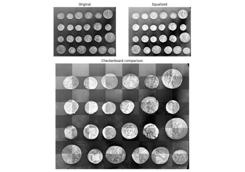Visual image comparison

- skimage.util.crop(ar, crop_width, copy=False, order='K')[source]#
Crop array ar by crop_width along each dimension.
- Parameters:
- ararray-like of rank N
Input array.
- crop_width{sequence, int}
Number of values to remove from the edges of each axis.
((before_1, after_1),…(before_N, after_N))specifies unique crop widths at the start and end of each axis.((before, after),) or (before, after)specifies a fixed start and end crop for every axis.(n,)ornfor integernis a shortcut for before = after =nfor all axes.- copybool, optional
If True, ensure the returned array is a contiguous copy. Normally, a crop operation will return a discontiguous view of the underlying input array.
- order{‘C’, ‘F’, ‘A’, ‘K’}, optional
If
copy==True, control the memory layout of the copy. Seenp.copy.
- Returns:
- croppedarray
The cropped array. If
copy=False(default), this is a sliced view of the input array.
- skimage.util.dtype_limits(image, clip_negative=False)[source]#
Return intensity limits, i.e. (min, max) tuple, of the image’s dtype.
- Parameters:
- imagendarray
Input image.
- clip_negativebool, optional
If True, clip the negative range (i.e. return 0 for min intensity) even if the image dtype allows negative values.
- Returns:
- imin, imaxtuple
Lower and upper intensity limits.
- skimage.util.img_as_bool(image, force_copy=False)[source]#
Convert an image to boolean format.
- Parameters:
- imagendarray
Input image.
- force_copybool, optional
Force a copy of the data, irrespective of its current dtype.
- Returns:
- outndarray of bool (bool_)
Output image.
Notes
The upper half of the input dtype’s positive range is True, and the lower half is False. All negative values (if present) are False.
- skimage.util.img_as_float(image, force_copy=False)[source]#
Convert an image to floating point format.
This function is similar to
img_as_float64, but will not convert lower-precision floating point arrays to float64.- Parameters:
- imagendarray
Input image.
- force_copybool, optional
Force a copy of the data, irrespective of its current dtype.
- Returns:
- outndarray of float
Output image.
Notes
The range of a floating point image is [0.0, 1.0] or [-1.0, 1.0] when converting from unsigned or signed datatypes, respectively. If the input image has a float type, intensity values are not modified and can be outside the ranges [0.0, 1.0] or [-1.0, 1.0].
- skimage.util.img_as_float32(image, force_copy=False)[source]#
Convert an image to single-precision (32-bit) floating point format.
- Parameters:
- imagendarray
Input image.
- force_copybool, optional
Force a copy of the data, irrespective of its current dtype.
- Returns:
- outndarray of float32
Output image.
Notes
The range of a floating point image is [0.0, 1.0] or [-1.0, 1.0] when converting from unsigned or signed datatypes, respectively. If the input image has a float type, intensity values are not modified and can be outside the ranges [0.0, 1.0] or [-1.0, 1.0].
- skimage.util.img_as_float64(image, force_copy=False)[source]#
Convert an image to double-precision (64-bit) floating point format.
- Parameters:
- imagendarray
Input image.
- force_copybool, optional
Force a copy of the data, irrespective of its current dtype.
- Returns:
- outndarray of float64
Output image.
Notes
The range of a floating point image is [0.0, 1.0] or [-1.0, 1.0] when converting from unsigned or signed datatypes, respectively. If the input image has a float type, intensity values are not modified and can be outside the ranges [0.0, 1.0] or [-1.0, 1.0].
- skimage.util.img_as_int(image, force_copy=False)[source]#
Convert an image to 16-bit signed integer format.
- Parameters:
- imagendarray
Input image.
- force_copybool, optional
Force a copy of the data, irrespective of its current dtype.
- Returns:
- outndarray of int16
Output image.
Notes
The values are scaled between -32768 and 32767. If the input data-type is positive-only (e.g., uint8), then the output image will still only have positive values.
- skimage.util.img_as_ubyte(image, force_copy=False)[source]#
Convert an image to 8-bit unsigned integer format.
- Parameters:
- imagendarray
Input image.
- force_copybool, optional
Force a copy of the data, irrespective of its current dtype.
- Returns:
- outndarray of ubyte (uint8)
Output image.
Notes
Negative input values will be clipped. Positive values are scaled between 0 and 255.
- skimage.util.img_as_uint(image, force_copy=False)[source]#
Convert an image to 16-bit unsigned integer format.
- Parameters:
- imagendarray
Input image.
- force_copybool, optional
Force a copy of the data, irrespective of its current dtype.
- Returns:
- outndarray of uint16
Output image.
Notes
Negative input values will be clipped. Positive values are scaled between 0 and 65535.
- skimage.util.invert(image, signed_float=False)[source]#
Invert an image.
Invert the intensity range of the input image, so that the dtype maximum is now the dtype minimum, and vice-versa. This operation is slightly different depending on the input dtype:
unsigned integers: subtract the image from the dtype maximum
signed integers: subtract the image from -1 (see Notes)
floats: subtract the image from 1 (if signed_float is False, so we assume the image is unsigned), or from 0 (if signed_float is True).
See the examples for clarification.
- Parameters:
- imagendarray
Input image.
- signed_floatbool, optional
If True and the image is of type float, the range is assumed to be [-1, 1]. If False and the image is of type float, the range is assumed to be [0, 1].
- Returns:
- invertedndarray
Inverted image.
Notes
Ideally, for signed integers we would simply multiply by -1. However, signed integer ranges are asymmetric. For example, for np.int8, the range of possible values is [-128, 127], so that -128 * -1 equals -128! By subtracting from -1, we correctly map the maximum dtype value to the minimum.
Examples
>>> img = np.array([[100, 0, 200], ... [ 0, 50, 0], ... [ 30, 0, 255]], np.uint8) >>> invert(img) array([[155, 255, 55], [255, 205, 255], [225, 255, 0]], dtype=uint8) >>> img2 = np.array([[ -2, 0, -128], ... [127, 0, 5]], np.int8) >>> invert(img2) array([[ 1, -1, 127], [-128, -1, -6]], dtype=int8) >>> img3 = np.array([[ 0., 1., 0.5, 0.75]]) >>> invert(img3) array([[1. , 0. , 0.5 , 0.25]]) >>> img4 = np.array([[ 0., 1., -1., -0.25]]) >>> invert(img4, signed_float=True) array([[-0. , -1. , 1. , 0.25]])
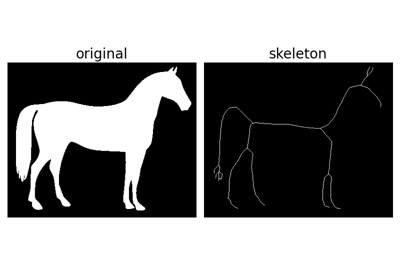Skeletonize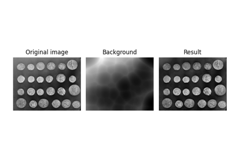Use rolling-ball algorithm for estimating background intensity
Use rolling-ball algorithm for estimating background intensity

- skimage.util.label_points(coords, output_shape)[source]#
Assign unique integer labels to coordinates on an image mask
- Parameters:
- coords: ndarray
An array of N coordinates with dimension D
- output_shape: tuple
The shape of the mask on which coords are labelled
- Returns:
- labels: ndarray
A mask of zeroes containing unique integer labels at the coords
Notes
The labels are assigned to coordinates that are converted to integer and considered to start from 0.
Coordinates that are out of range of the mask raise an IndexError.
Negative coordinates raise a ValueError
Examples
>>> import numpy as np >>> from skimage.util._label import label_points >>> coords = np.array([[0, 1], [2, 2]]) >>> output_shape = (5, 5) >>> mask = label_points(coords, output_shape) >>> mask array([[0, 1, 0, 0, 0], [0, 0, 0, 0, 0], [0, 0, 2, 0, 0], [0, 0, 0, 0, 0], [0, 0, 0, 0, 0]], dtype=uint64)
- skimage.util.map_array(input_arr, input_vals, output_vals, out=None)[source]#
Map values from input array from input_vals to output_vals.
- Parameters:
- input_arrarray of int, shape (M[, N][, P][, …])
The input label image.
- input_valsarray of int, shape (N,)
The values to map from.
- output_valsarray, shape (N,)
The values to map to.
- out: array, same shape as `input_arr`
The output array. Will be created if not provided. It should have the same dtype as output_vals.
- Returns:
- outarray, same shape as input_arr
The array of mapped values.
- skimage.util.montage(arr_in, fill='mean', rescale_intensity=False, grid_shape=None, padding_width=0, *, channel_axis=None)[source]#
Create a montage of several single- or multichannel images.
Create a rectangular montage from an input array representing an ensemble of equally shaped single- (gray) or multichannel (color) images.
For example,
montage(arr_in)called with the following arr_in1
2
3
will return
1
2
3
where the ‘*’ patch will be determined by the fill parameter.
- Parameters:
- arr_in(K, M, N[, C]) ndarray
An array representing an ensemble of K images of equal shape.
- fillfloat or array-like of floats or ‘mean’, optional
Value to fill the padding areas and/or the extra tiles in the output array. Has to be float for single channel collections. For multichannel collections has to be an array-like of shape of number of channels. If mean, uses the mean value over all images.
- rescale_intensitybool, optional
Whether to rescale the intensity of each image to [0, 1].
- grid_shapetuple, optional
The desired grid shape for the montage (ntiles_row, ntiles_column). The default aspect ratio is square.
- padding_widthint, optional
The size of the spacing between the tiles and between the tiles and the borders. If non-zero, makes the boundaries of individual images easier to perceive.
- channel_axisint or None, optional
If None, the image is assumed to be a grayscale (single channel) image. Otherwise, this parameter indicates which axis of the array corresponds to channels.
- Returns:
- arr_out(K*(M+p)+p, K*(N+p)+p[, C]) ndarray
Output array with input images glued together (including padding p).
Examples
>>> import numpy as np >>> from skimage.util import montage >>> arr_in = np.arange(3 * 2 * 2).reshape(3, 2, 2) >>> arr_in array([[[ 0, 1], [ 2, 3]], [[ 4, 5], [ 6, 7]], [[ 8, 9], [10, 11]]]) >>> arr_out = montage(arr_in) >>> arr_out.shape (4, 4) >>> arr_out array([[ 0, 1, 4, 5], [ 2, 3, 6, 7], [ 8, 9, 5, 5], [10, 11, 5, 5]]) >>> arr_in.mean() 5.5 >>> arr_out_nonsquare = montage(arr_in, grid_shape=(1, 3)) >>> arr_out_nonsquare array([[ 0, 1, 4, 5, 8, 9], [ 2, 3, 6, 7, 10, 11]]) >>> arr_out_nonsquare.shape (2, 6)
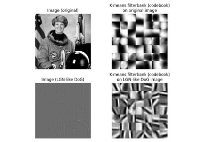Gabors / Primary Visual Cortex “Simple Cells” from an Image
Gabors / Primary Visual Cortex "Simple Cells" from an Image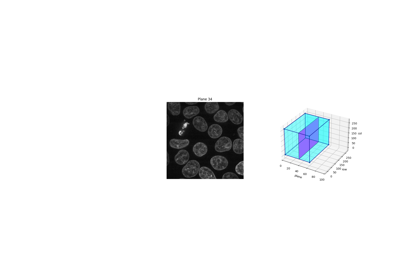Explore 3D images (of cells)
- skimage.util.random_noise(image, mode='gaussian', rng=None, clip=True, **kwargs)[source]#
Function to add random noise of various types to a floating-point image.
- Parameters:
- imagendarray
Input image data. Will be converted to float.
- modestr, optional
One of the following strings, selecting the type of noise to add:
- ‘gaussian’ (default)
Gaussian-distributed additive noise.
- ‘localvar’
Gaussian-distributed additive noise, with specified local variance at each point of image.
- ‘poisson’
Poisson-distributed noise generated from the data.
- ‘salt’
Replaces random pixels with 1.
- ‘pepper’
Replaces random pixels with 0 (for unsigned images) or -1 (for signed images).
- ‘s&p’
Replaces random pixels with either 1 or low_val, where low_val is 0 for unsigned images or -1 for signed images.
- ‘speckle’
Multiplicative noise using
out = image + n * image, wherenis Gaussian noise with specified mean & variance.
- rng{
numpy.random.Generator, int}, optional Pseudo-random number generator. By default, a PCG64 generator is used (see
numpy.random.default_rng()). If rng is an int, it is used to seed the generator.- clipbool, optional
If True (default), the output will be clipped after noise applied for modes ‘speckle’, ‘poisson’, and ‘gaussian’. This is needed to maintain the proper image data range. If False, clipping is not applied, and the output may extend beyond the range [-1, 1].
- meanfloat, optional
Mean of random distribution. Used in ‘gaussian’ and ‘speckle’. Default : 0.
- varfloat, optional
Variance of random distribution. Used in ‘gaussian’ and ‘speckle’. Note: variance = (standard deviation) ** 2. Default : 0.01
- local_varsndarray, optional
Array of positive floats, same shape as image, defining the local variance at every image point. Used in ‘localvar’.
- amountfloat, optional
Proportion of image pixels to replace with noise on range [0, 1]. Used in ‘salt’, ‘pepper’, and ‘salt & pepper’. Default : 0.05
- salt_vs_pepperfloat, optional
Proportion of salt vs. pepper noise for ‘s&p’ on range [0, 1]. Higher values represent more salt. Default : 0.5 (equal amounts)
- Returns:
- outndarray
Output floating-point image data on range [0, 1] or [-1, 1] if the input image was unsigned or signed, respectively.
- Other Parameters:
- seedDEPRECATED
Deprecated in favor of rng.
Deprecated since version 0.21.
Notes
Speckle, Poisson, Localvar, and Gaussian noise may generate noise outside the valid image range. The default is to clip (not alias) these values, but they may be preserved by setting clip=False. Note that in this case the output may contain values outside the ranges [0, 1] or [-1, 1]. Use this option with care.
Because of the prevalence of exclusively positive floating-point images in intermediate calculations, it is not possible to intuit if an input is signed based on dtype alone. Instead, negative values are explicitly searched for. Only if found does this function assume signed input. Unexpected results only occur in rare, poorly exposes cases (e.g. if all values are above 50 percent gray in a signed image). In this event, manually scaling the input to the positive domain will solve the problem.
The Poisson distribution is only defined for positive integers. To apply this noise type, the number of unique values in the image is found and the next round power of two is used to scale up the floating-point result, after which it is scaled back down to the floating-point image range.
To generate Poisson noise against a signed image, the signed image is temporarily converted to an unsigned image in the floating point domain, Poisson noise is generated, then it is returned to the original range.
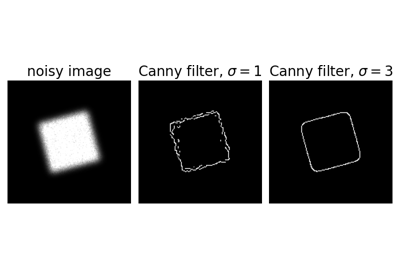Canny edge detector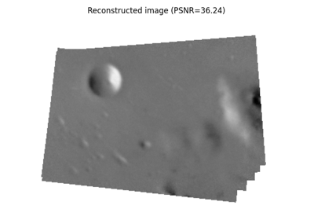Assemble images with simple image stitching
Assemble images with simple image stitching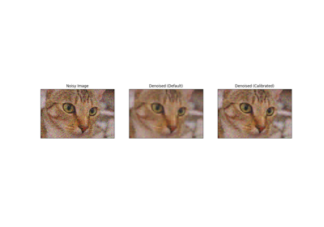Calibrating Denoisers Using J-Invariance
Calibrating Denoisers Using J-Invariance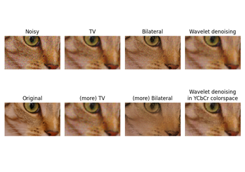Denoising a picture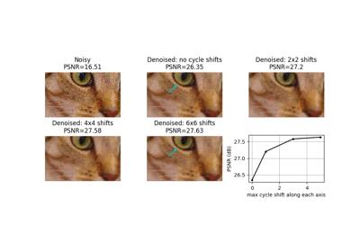Shift-invariant wavelet denoising
Shift-invariant wavelet denoising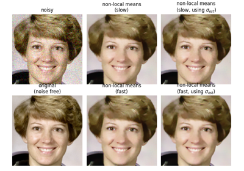Non-local means denoising for preserving textures
Non-local means denoising for preserving textures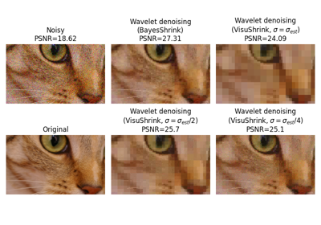Wavelet denoising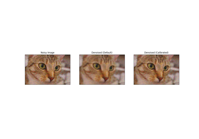Full tutorial on calibrating Denoisers Using J-Invariance
Full tutorial on calibrating Denoisers Using J-Invariance
- skimage.util.regular_grid(ar_shape, n_points)[source]#
Find n_points regularly spaced along ar_shape.
The returned points (as slices) should be as close to cubically-spaced as possible. Essentially, the points are spaced by the Nth root of the input array size, where N is the number of dimensions. However, if an array dimension cannot fit a full step size, it is “discarded”, and the computation is done for only the remaining dimensions.
- Parameters:
- ar_shapearray-like of ints
The shape of the space embedding the grid.
len(ar_shape)is the number of dimensions.- n_pointsint
The (approximate) number of points to embed in the space.
- Returns:
- slicestuple of slice objects
A slice along each dimension of ar_shape, such that the intersection of all the slices give the coordinates of regularly spaced points.
Changed in version 0.14.1: In scikit-image 0.14.1 and 0.15, the return type was changed from a list to a tuple to ensure compatibility with Numpy 1.15 and higher. If your code requires the returned result to be a list, you may convert the output of this function to a list with:
>>> result = list(regular_grid(ar_shape=(3, 20, 40), n_points=8))
Examples
>>> ar = np.zeros((20, 40)) >>> g = regular_grid(ar.shape, 8) >>> g (slice(5, None, 10), slice(5, None, 10)) >>> ar[g] = 1 >>> ar.sum() 8.0 >>> ar = np.zeros((20, 40)) >>> g = regular_grid(ar.shape, 32) >>> g (slice(2, None, 5), slice(2, None, 5)) >>> ar[g] = 1 >>> ar.sum() 32.0 >>> ar = np.zeros((3, 20, 40)) >>> g = regular_grid(ar.shape, 8) >>> g (slice(1, None, 3), slice(5, None, 10), slice(5, None, 10)) >>> ar[g] = 1 >>> ar.sum() 8.0
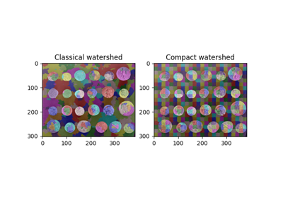Find Regular Segments Using Compact Watershed
Find Regular Segments Using Compact Watershed
- skimage.util.regular_seeds(ar_shape, n_points, dtype=<class 'int'>)[source]#
Return an image with ~`n_points` regularly-spaced nonzero pixels.
- Parameters:
- ar_shapetuple of int
The shape of the desired output image.
- n_pointsint
The desired number of nonzero points.
- dtypenumpy data type, optional
The desired data type of the output.
- Returns:
- seed_imgarray of int or bool
The desired image.
Examples
>>> regular_seeds((5, 5), 4) array([[0, 0, 0, 0, 0], [0, 1, 0, 2, 0], [0, 0, 0, 0, 0], [0, 3, 0, 4, 0], [0, 0, 0, 0, 0]])
- skimage.util.slice_along_axes(image, slices, axes=None, copy=False)[source]#
Slice an image along given axes.
- Parameters:
- imagendarray
Input image.
- sliceslist of 2-tuple (a, b) where a < b.
For each axis in axes, a corresponding 2-tuple
(min_val, max_val)to slice with (as with Python slices,max_valis non-inclusive).- axesint or tuple, optional
Axes corresponding to the limits given in slices. If None, axes are in ascending order, up to the length of slices.
- copybool, optional
If True, ensure that the output is not a view of image.
- Returns:
- outndarray
The region of image corresponding to the given slices and axes.
Examples
>>> from skimage import data >>> img = data.camera() >>> img.shape (512, 512) >>> cropped_img = slice_along_axes(img, [(0, 100)]) >>> cropped_img.shape (100, 512) >>> cropped_img = slice_along_axes(img, [(0, 100), (0, 100)]) >>> cropped_img.shape (100, 100) >>> cropped_img = slice_along_axes(img, [(0, 100), (0, 75)], axes=[1, 0]) >>> cropped_img.shape (75, 100)
- skimage.util.unique_rows(ar)[source]#
Remove repeated rows from a 2D array.
In particular, if given an array of coordinates of shape (Npoints, Ndim), it will remove repeated points.
- Parameters:
- ar2-D ndarray
The input array.
- Returns:
- ar_out2-D ndarray
A copy of the input array with repeated rows removed.
- Raises:
- ValueErrorif ar is not two-dimensional.
Notes
The function will generate a copy of ar if it is not C-contiguous, which will negatively affect performance for large input arrays.
Examples
>>> ar = np.array([[1, 0, 1], ... [0, 1, 0], ... [1, 0, 1]], np.uint8) >>> unique_rows(ar) array([[0, 1, 0], [1, 0, 1]], dtype=uint8)
- skimage.util.view_as_blocks(arr_in, block_shape)[source]#
Block view of the input n-dimensional array (using re-striding).
Blocks are non-overlapping views of the input array.
- Parameters:
- arr_inndarray
N-d input array.
- block_shapetuple
The shape of the block. Each dimension must divide evenly into the corresponding dimensions of arr_in.
- Returns:
- arr_outndarray
Block view of the input array.
Examples
>>> import numpy as np >>> from skimage.util.shape import view_as_blocks >>> A = np.arange(4*4).reshape(4,4) >>> A array([[ 0, 1, 2, 3], [ 4, 5, 6, 7], [ 8, 9, 10, 11], [12, 13, 14, 15]]) >>> B = view_as_blocks(A, block_shape=(2, 2)) >>> B[0, 0] array([[0, 1], [4, 5]]) >>> B[0, 1] array([[2, 3], [6, 7]]) >>> B[1, 0, 1, 1] 13
>>> A = np.arange(4*4*6).reshape(4,4,6) >>> A array([[[ 0, 1, 2, 3, 4, 5], [ 6, 7, 8, 9, 10, 11], [12, 13, 14, 15, 16, 17], [18, 19, 20, 21, 22, 23]], [[24, 25, 26, 27, 28, 29], [30, 31, 32, 33, 34, 35], [36, 37, 38, 39, 40, 41], [42, 43, 44, 45, 46, 47]], [[48, 49, 50, 51, 52, 53], [54, 55, 56, 57, 58, 59], [60, 61, 62, 63, 64, 65], [66, 67, 68, 69, 70, 71]], [[72, 73, 74, 75, 76, 77], [78, 79, 80, 81, 82, 83], [84, 85, 86, 87, 88, 89], [90, 91, 92, 93, 94, 95]]]) >>> B = view_as_blocks(A, block_shape=(1, 2, 2)) >>> B.shape (4, 2, 3, 1, 2, 2) >>> B[2:, 0, 2] array([[[[52, 53], [58, 59]]], [[[76, 77], [82, 83]]]])
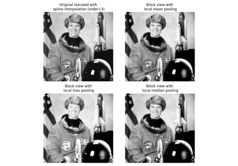Block views on images/arrays
- skimage.util.view_as_windows(arr_in, window_shape, step=1)[source]#
Rolling window view of the input n-dimensional array.
Windows are overlapping views of the input array, with adjacent windows shifted by a single row or column (or an index of a higher dimension).
- Parameters:
- arr_inndarray
N-d input array.
- window_shapeinteger or tuple of length arr_in.ndim
Defines the shape of the elementary n-dimensional orthotope (better know as hyperrectangle [1]) of the rolling window view. If an integer is given, the shape will be a hypercube of sidelength given by its value.
- stepinteger or tuple of length arr_in.ndim
Indicates step size at which extraction shall be performed. If integer is given, then the step is uniform in all dimensions.
- Returns:
- arr_outndarray
(rolling) window view of the input array.
Notes
One should be very careful with rolling views when it comes to memory usage. Indeed, although a ‘view’ has the same memory footprint as its base array, the actual array that emerges when this ‘view’ is used in a computation is generally a (much) larger array than the original, especially for 2-dimensional arrays and above.
For example, let us consider a 3 dimensional array of size (100, 100, 100) of
float64. This array takes about 8*100**3 Bytes for storage which is just 8 MB. If one decides to build a rolling view on this array with a window of (3, 3, 3) the hypothetical size of the rolling view (if one was to reshape the view for example) would be 8*(100-3+1)**3*3**3 which is about 203 MB! The scaling becomes even worse as the dimension of the input array becomes larger.References
Examples
>>> import numpy as np >>> from skimage.util.shape import view_as_windows >>> A = np.arange(4*4).reshape(4,4) >>> A array([[ 0, 1, 2, 3], [ 4, 5, 6, 7], [ 8, 9, 10, 11], [12, 13, 14, 15]]) >>> window_shape = (2, 2) >>> B = view_as_windows(A, window_shape) >>> B[0, 0] array([[0, 1], [4, 5]]) >>> B[0, 1] array([[1, 2], [5, 6]])
>>> A = np.arange(10) >>> A array([0, 1, 2, 3, 4, 5, 6, 7, 8, 9]) >>> window_shape = (3,) >>> B = view_as_windows(A, window_shape) >>> B.shape (8, 3) >>> B array([[0, 1, 2], [1, 2, 3], [2, 3, 4], [3, 4, 5], [4, 5, 6], [5, 6, 7], [6, 7, 8], [7, 8, 9]])
>>> A = np.arange(5*4).reshape(5, 4) >>> A array([[ 0, 1, 2, 3], [ 4, 5, 6, 7], [ 8, 9, 10, 11], [12, 13, 14, 15], [16, 17, 18, 19]]) >>> window_shape = (4, 3) >>> B = view_as_windows(A, window_shape) >>> B.shape (2, 2, 4, 3) >>> B array([[[[ 0, 1, 2], [ 4, 5, 6], [ 8, 9, 10], [12, 13, 14]], [[ 1, 2, 3], [ 5, 6, 7], [ 9, 10, 11], [13, 14, 15]]], [[[ 4, 5, 6], [ 8, 9, 10], [12, 13, 14], [16, 17, 18]], [[ 5, 6, 7], [ 9, 10, 11], [13, 14, 15], [17, 18, 19]]]])
Gabors / Primary Visual Cortex “Simple Cells” from an Image
Gabors / Primary Visual Cortex "Simple Cells" from an Image